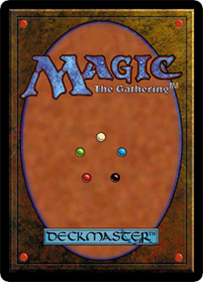
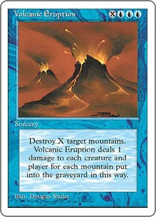
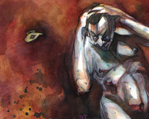
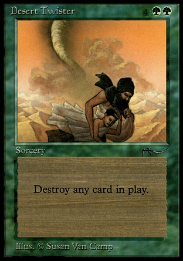

作者：Mark Rosewater
译者：我
原文地址：https://magic.wizards.com/en/articles/archive/making-magic/nights-round-table-1993-12-06

欢迎来到阿拉伯之夜的首周预览！我一直说我们还有更多的新内容没有发布（而不仅仅是反黑保护环和火山岛之类的），所以，今天我将为各位带来万智牌的第一个扩展系列。我甚至已经准备好了一张设计中的预览牌。我想先将它设计好，所以你可能要等一等才能看到它。如果有谁等不及想要一窥的话，尽管拉到下一段来找我吧。好了他们不在了，现在我想告诉你们这些坚持看下来的读者们——我更喜欢你们，真的。别告诉他们。
在我们开始享用阿拉伯之夜系列呈现给我们的大餐之前，我想先为“魔法设计院”的预览文章加上一项主题：为各位读者介绍系列的开发团队。闲话不多说，让我们开始吧。

理查·加菲 - 理查以设计万智牌而闻名。而在他的业余时间中，他是一名数学教授。事实上，我认为他应该是在业余时间设计游戏，但是若是万智牌持续保持喜人的发展之势，他或许就能够全身心地投入游戏设计中来了。（据称，他目前正设计另一款集换式卡牌游戏，其开发围绕一款著名的角色扮演游戏：hint: think fangs.）我从未见过比理查更沉迷游戏的人。我每次前去拜访他时，他都能拿出若干我从未听说过的新游戏（这足以证明德国人是真的喜爱桌面游戏），每一款都充满趣味。若是要设计万智牌的第一个扩展系列，恐怕只有万智牌的创造者合适了吧。（另外，还有许多的扩展系列已在设计中——我知道的就有三个，还有更多的系列传出了风声。）就像你即将看到的那样，理查从不会让我们停止惊叹。阿拉伯之夜系列一定能为这个游戏领引全新的、令人激动的方向。
更少就更好吗？
在开始关于阿拉伯之夜的内容之前，我想先与读者们讨论一个在论坛和我的邮箱中都十分热门的问题：万智牌究竟需要扩展系列吗？一篇在我的论坛专栏“新年展望”（我在这个专栏中阐述万智牌下一年的设计方向）下名为taintedlace的读者的回帖能够很好地概括这一观点：
“很显然，威世智对售卖扩展系列充满了兴趣，因为那能赚到钱。我并不介意这一点。他们做出了一个好游戏，他们当然有权利榨取它。事实上，一个成功的游戏当然应该有数不清的扩展系列。
我的问题是，我们牌手，需要扩展系列吗？我很喜爱《银河遭遇战》，但我并不觉得我有什么需求来购买那些数不胜数的附加系列。你知道我有多少AD&D的书吗？就三本。在《Trivial Pursuit》的原版之外，我只购买了一款其它版本，我现在很后悔买了它。
对，万智牌将会推出扩展系列。它会火爆。但真正的问题在于，我们需要它吗？”
首先我得强调，我并不为威世智工作，我只是个为他们写文章的自由作者。事实上，如果理查每周都有时间来写一篇专栏文章的话，“魔法设计院”应该是由他来撰写的。但那家伙的空余时间全部用来设计游戏了，而我完全能够理解他的想法。
让我来解释吧。理查对于万智牌的理念是，“万智牌是一个比牌池更广阔的游戏。”集换式卡牌游戏着重于创造一个将调整细节的责任交给牌手的游戏。为了达成这一目的，就要让牌手们有多样的选择。卡牌越多，可能的选择也就越多。比方说，我们想要构筑一套烧脸套牌（一套红蓝套牌，以大量能直接对对手造成伤害的咒语和生物组成）。在四十张牌的套牌中有三分之一的地和产费神器，还有26个位置留给生物和咒语。
就像我上个月在赛事专栏中解释过的那样，目前存在呼声不断高涨的一种趋势，即将每套牌中的同名牌限制至四张，这也是我发自真心支持的。如果我们按照这一规则来构筑套牌的话，我们能够做出哪些可行的选择呢？这里列出所有可用的造成伤害的卡牌。
蓝色：
- Creature Bond
- Feedback
- Pirate Ship
- Power Leak
- Prodigal Sorcerer
- Psionic Blast
- Psychic Venom
- Volcanic Eruption
红色：
- Disintegrate
- Earthbind
- Earthquake
- Fireball
- Lightning Bolt
- Manabarbs
- Orcish Artillery
- Power Surge
神器：
- Ankh of Mishra
- Black Vise
- Copper Tablet
- Dingus Egg
- Rod of Ruin

我知道，乍一看这里似乎有很多选择。但如果有人组出了这套牌，我就只能说，并不是你所想的那样。这其中的许多卡牌只在有特定要求的情况下能够发挥效果。Volcanic Eruption要求你的对手拥有山脉，而Earthbind要求对手拥有飞行生物。另一些诸如Creature Bond的卡牌则是效果不够强力。很快，你的选择就会被限制住。如果一直不在游戏系统中加入新的卡牌，人们总会从根本上为这套牌找到一个最强的构筑方案。这肯定需要一段时间，但肯定会有人做到这一步的。然后会怎么样呢？
构筑一套新套牌是我所期望听到的答案。我当然会这么做，而最终我也会将这套牌组到最强。与此同时，会有数以千计的牌手们同样这么做，然后他们会开始互相交流分享信息。而这就意味着，最终的最终，牌手们会破解这个游戏。他们会知道何种套牌能够战胜何种套牌。最终，游戏会以一个石头剪刀布式的环境作为终结，而牌手只需要猜测一场比赛中都会出现哪些套牌就可以了。
现在万智牌还一个扩展系列都没有推出，所以说这些还显得有点早；但是，这些推论都是建立在集换式卡牌游戏的根本特点上的。因为已经有人见过阿拉伯之夜了，请让我再强调一次：这个系列绝对能够令你们感到震撼。
如时间一般古老的传说
我们已经得出了结论，万智牌需要扩展系列。那么，阿拉伯之夜能够带给我们什么呢？有很多。有的我今天就能说出来，有的你必须等等才能看到（或许是本站的另一篇预览，或许是这个月晚些时候全牌表放出之后）。
首先，让我们谈谈主题吧。阿拉伯之夜系列的风味是从真实世界的来源中借鉴的，这已经不是个秘密了。不像限定版（Limited Edition）的故事都发生在原创的世界中（呃，确实从一些著名的奇幻故事中受到了不少影响），阿拉伯之夜系列的灵感直接来源于古波斯的传奇故事（又被称作《天方夜谭》）。
理查选择波斯神话的原因是他对此非常着迷。当彼得（彼得·阿基森，威世智的董事长）要求理查设计万智牌的首个扩展系列时，理查对造访一个真实存在的世界兴趣盎然。他刚刚读过一本集中描绘阿拉伯故事的漫画《睡魔》，而他感到这作为游戏开发的原材料来说是没有多少人触碰过的一块全新领域。
这意味着什么？阿拉丁、阿里巴巴、辛巴达——他们全都会出现。在78张卡牌中，理查探索了《天方夜谭》的方方面面。从地域，到人物，或是事物，本系列抓住了那些曾在一瞬间吸引了理查的故事的灵魂。
现在来看些全然不同的新玩意吧
本系列充满了异域风味，但在游戏性方面，阿拉伯之夜又为我们展现了什么呢？它是怎样做到撼动现状——就像我在上文中承诺的那样——的呢？很好，你提出了这个问题。

就我而言，我认为奠定了本系列质量的首要一点便是，理查并没有将自己机械地局限在已有的设计中。比如，阿拉伯之夜有九张新的地牌。你知道其中有几张能够横置产费吗？四张。其余的则能够做一些其他的事情。再比如说这个呢？一些卡牌在你使用时并不会一直产生效果。这又意味着什么？我是说，有时候你使用它们，它们产生了效应；但有时候，你使用它们时则不会。而这又有什么好处呢？你花的法术力更少。如果你运气不错的话，你就能花费更少的费用而获得更大的收益。（不用担心，就算你运气不佳，它也能为你带来不一样的机遇。）
会有一张可以离开游戏然后返回的卡牌。会有一张你希望你的对手消灭掉的卡牌。甚至还会有一张让你暂停游戏来干一些别的事情的卡牌。如果你对于干的是些什么别的事情有一点点好奇心，你就得看看阿拉伯之夜系列了。
预览一张杀牌
等等，我是不是应该发布预览牌了？好，让我们看看它吧。我选择这张牌的原因是，它所做的是在之前的万智牌中没有一张卡牌能做到的（呃，确实有一张，但它很难被使用）。卡牌的效果会随着场面的不断变化而随着变化，但还从未有牌将效果以如此简单明了的方式表现出来过。噢，另外，这张牌的规则叙述只有五个单词。是的，这张预览牌会让你吃惊得合不拢嘴，而它的长度甚至只有这个句子的20%！
这张牌的有趣之处在于，一开始我们想要展示波斯人的生活形式。本系列中的大多数卡牌的设计都只是单调地将卡牌与《天方夜谭》世界中存在的事物一一对应；但在寻找展示这一内容的时候，理查突然有了一个漂亮的、令人激动的点子。不要再吊读者们的胃口了，让我们看看它吧。当你打开一包阿拉伯之夜补充包时，这张牌会欢迎你们的。

是的，这是一张不需要抛起来的混沌法球。（是的，是的，我知道它不能一次消灭很多东西，但它也不会落空。）而且，它能够消灭一切东西，一切！呃，也许蜂箱造出的1/1黄蜂衍生物（再加上阿拉伯之夜的新卡牌造出的两种新的衍生物）除外，因为衍生物不是牌。那么，你现在认为蜂箱不能做得更好了吗？（顺带一提，我终于也开出了一张蜂箱，我想要它已经很久了。）
在你们看完今天的这篇文章之前，我还要小小地吊一会你们的胃口。这里是你们之后会看到的一些卡牌：
- 一个能够杀掉生物、神器、地和结界，阻止瞬间、干涉和法术的施放的神器
- 一块能够消灭生物的地
- 一个需要[2][R][R]来施放的0/1生物
- 一张为你的象主题套牌准备的卡牌
- 一个法术力费用高到在一个法术力符号圆圈中写不下的神器
- 一块能够产出任意颜色法术力的地
- 一张即使属于你的对手，你也能起动能力的牌
另外，这是你们之后会看到的一些卡牌名称：
以眼还眼 (而且它是白色的！)
飞毯
亚历山大图书馆
变化型态
金字塔
唱歌树
不稳定性异变
最后，奉上一些新的召唤类别：
骆驼
巨灵
麻风病患
玛利德
巫婆
我已经激发了你的兴趣了吗？如果没有，那你是什么做的？难道是石头吗？
今天我要说的就到这里。
我们下次再说；下周，我会带你继续一窥阿拉伯之夜的特色。
到那时，希望你能够试着去赞美鲨鱼。
这里是本来应该位于最前面的前言：
欢迎来到What if主题周！为了向时空混沌系列中疯狂而又奇妙的平行现实致以敬意，我们决定设立一个关于它们的主题周。本周的每篇专栏文章都会探索一个与现实全然不同的假定场景；而每位专栏作家都能选择一个他想要的情况。
我的专栏是在星期一，所以这个主题周由我来开始。所以，让我告诉你我的假设是什么吧：
“假如……万智牌官网（以及魔法设计院专栏）在万智牌发售的第一天起就存在会怎么样呢？”
你知道，我一直对如果万智牌官网（以及与今天一样的互联网）在万智牌刚起步时便存在的话，早期的万智牌会如何发展这一假设十分好奇，而今天我的这一专栏就对这一可能性予以一瞥。
让我们开始吧。
本文的真实写作时间是2007年2月26日，即时空混沌系列发售时。